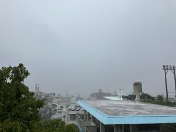

うるがいの話 ある日
最新: 量子のもつれ【うるがいの話 ある日】とは 一日だけのプログです
『うるがいの話』の最新一日だけのプログで、通信料が少なく経済的だ。カニの画像をクリックすると全ての日付が載る『うるがいの話』サイトを表示します
|
|
【うるがいの話】 うるがい(ｳﾙｶﾞｲ urugai)とは、『もずくがに』の名前でとても大きくなります。 |
|---|---|
|
|
【カミマヤーの話】 猫のことを方言でマヤーといいます。カミマヤー（kamimayaa）とは、神の猫のことです。 |
|
【たながぁの音楽】 たながぁ（ﾀﾅｶﾞｰ tanagaa）とは手長えびのことで、何種類かあり大きいのは車 エビぐらいになります。 |

|
【ぶながぁの話】 ぶながぁ(ﾌﾞﾅｶﾞｰ bunagaa)とは、赤い髪の毛、赤い身体、そして身長は１ｍ２０ｃｍ ぐらい、川の蟹を食べているの目撃された。場所は沖縄県国頭郡大宜味村のと ある村僕の隣近所に住んでいる爺さんから、聞いた話です。 |
|
|
【ギーマの話】 ギーマ(giima)とは、山原の里山に咲くスズランに似た、 花を付けます。実は食べられます、 気が付くと口の周りが紫になっています。 |
2025年07月09日 (水）量子のもつれ
17:06

高校では物理は、得意科目でした。図書館から、『量子力学』に関
連する本を、読み漁っています。ただいま、『量子力学で生命の謎
を解く、ジム・アル＝カリーリ／著』を読んでいます。渡り鳥はど
のようにして目的地までの行き方を知るのか。サケはなぜ３年間の
航海を経て、生まれて場所にもどれるのか。それは、『量子のもつ
れれ』に関係すると・・・。そもそも、量子のもつれとは、ウーン
それは「量子もつれ」と呼ばれ、光の粒などの量子が、お互いにど
んなに遠く離れていても、片方の量子の状態が変わるともう片方の
状態も瞬時に変化するという現象です。
この現象を利用すると、ある情報を量子に埋め込めばそれを離れた
場所にあるもう一方の量子に光の速度で伝えることができます。
フムフム、２０２２年のノーベル物理学賞に「量子もつれ」の研究
者３人が受賞している。全く、記憶にございません。で、相対性理
論はなんとなく理解できましたが、量子力学は・・はまだわかりま
せん！。
一日中、雨の予報だったが・・・・、降らなかった.